Equipment ／ CosmoTech
MASTER LineMVR 型大型廢液處理裝置

產品特色
- 德國製造商 KMU-LOFT 製，實績豐富
- MVR 方式蒸發器／減壓蒸餾處理
- 24 小時連續運轉／自動釜洗淨功能
- 可透過網路確認運轉狀況
導入效果
- 降低廢液處理成本（委託・運搬）
- 廢液處理內製化，成本更穩定
- 減少廢液保管量與保管空間
- 因應處理費上漲與法規趨嚴
處理流程（參考）
- 01水溶性廢液
- 02帶式過濾機
- 03蒸發器本體（搭配酸性／鹼性洗淨劑）
- 04濃縮液 ／ 油水分離機
- 05再生水（蒸餾水）
常見問題
Q1哪些廢液可以處理？
切削廢液、洗淨廢液、電鍍廢液等，以水為主成分的水溶性廢液。依廢液種類與濃度，適用性會有所不同，建議先進行處理測試確認。
Q2採用什麼處理方式？
將裝置內的濃縮槽減壓，以 40℃ 以下的低溫蒸餾分離廢液的「減壓蒸餾方式」。並採用 MVR 方式：將蒸發的蒸氣以壓縮機壓縮、再加熱後作為熱源再利用，幾乎不需外部加熱，可大幅降低耗電；也不需要鍋爐、冷卻水設備、壓縮空氣等附帶設備。
Q3分離出的再生水如何處理？
分離出的再生水可依現場需求再利用於洗淨或稀釋；若符合當地排放標準，也可排入下水道。
DESTIMAT® LE 系列（舊站資料）
KMU LOFT是一家總部位於德國的廢液處理設備制造商。我們在世界各地引進了多台大型廢液處理設備。LOFT產品是對環境和人類都友好的環保產品。 在這種蒸發器設備中，液體通過真空（減壓）蒸發進行處理。非揮發性殘留物保留為濃縮物。產生的閃蒸氣再冷凝，然後作為純餾出物從設備中排出。 DESTIMAT LE是一種多管式換熱器，采用自然循環原理，充分利用熱量和循環。水汽相分離是用旋風分離器進行的，最後是多級蒸汽洗滌，以增加蒸汽流量，獲得盡可能好的蒸汽和餾分。供給設備的廢液經預熱換熱器與排出的餾出液逆流預熱，進入立式換熱器。
資料來源：COSMO TECH（cosmotech-jp）
大幅度減少廢液的排出量
影片介紹
適用於以下工藝用水
- 表面處理工藝產生的沖洗水和活性槽液
- 乳化液（冷卻劑和潤滑劑）
- 清洗廢水
- 含有脫模劑的廢水
- 裂紋檢測系統產生的沖洗水
- 探傷檢測用滲透劑
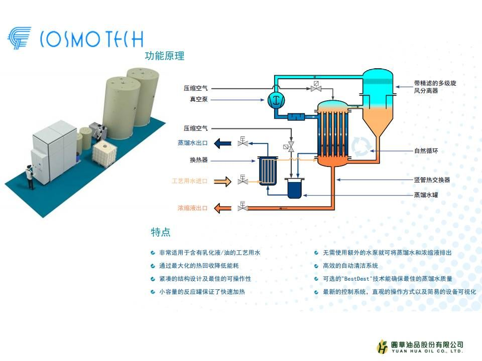
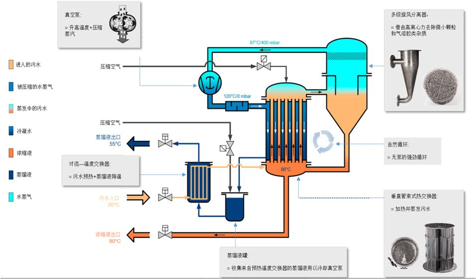
可凈化多少廢水量？
DESTIMAT® LE 系列实现了设备每年的性能高达 264 m³ 至 23.000 m³ 废水。
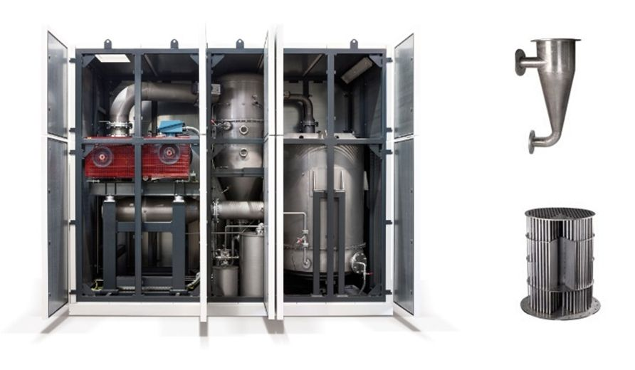
DESTIMAT® 特點:
- 非常適用於含有乳化液/油的工藝廢水
- 通過最大化的熱回收降低能耗
- 緊湊的結構設計及最佳的可操作性
- 小容量的反應罐保證了快速加熱
- 無需使用額外的水泵就可將蒸餾水和濃縮液排出
- 高效的自動清潔系統
- 可選的"BestDest"技術能確保最佳的蒸餾水質量
- 最新的控制系統，直觀的操作方式以及簡易的設備可視化
DESTIMAT® 配件
我們同時為您提供合適的預處理和後處理工序，用於處理工序用水和進一步處理蒸餾物。例如中和、除油、消毒、分離淤泥等工序。這將根據您的要求和設備進行調整。其內置於設備中，或在蒸發器的外圍設備中作為全自動的系統解決方案投入運行。 您是否需要相應的運行設備和材料？我們竭誠為您提供咨詢建議或者您可直接瀏覽運行設備頁面。
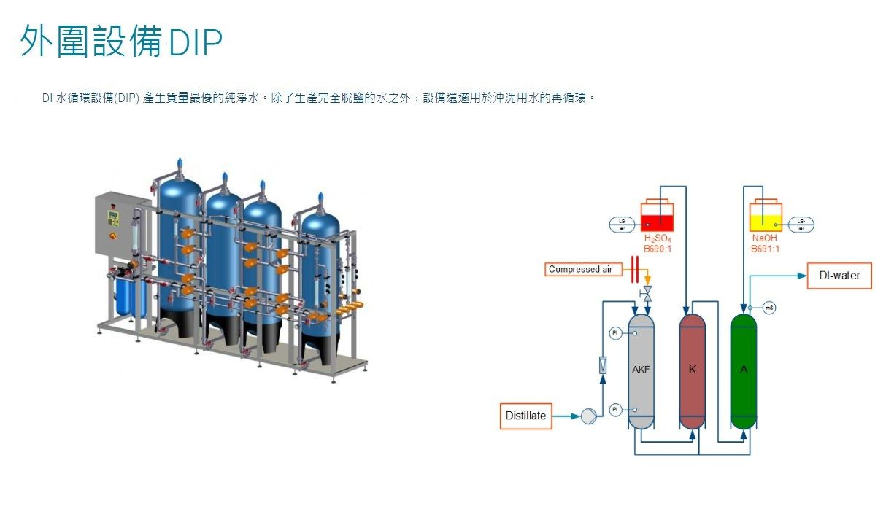
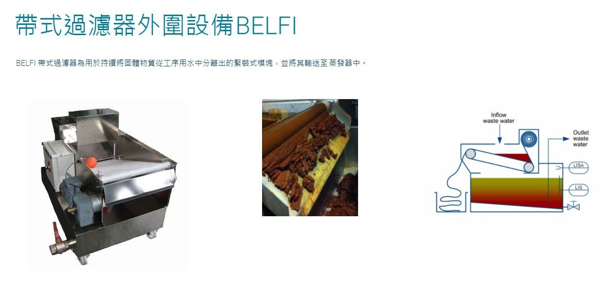
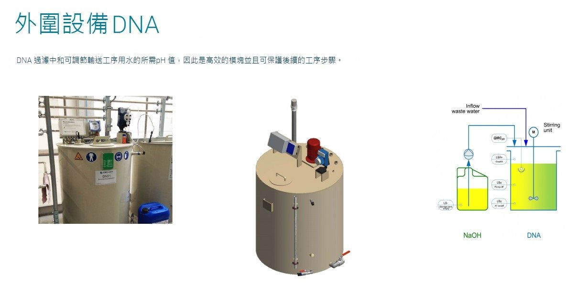
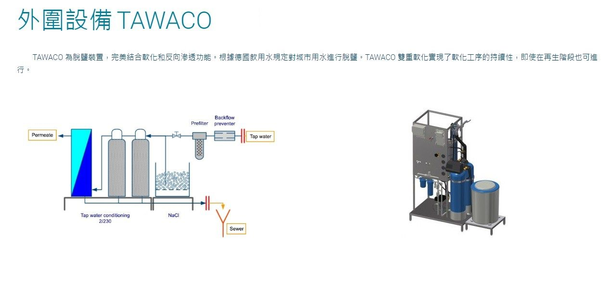
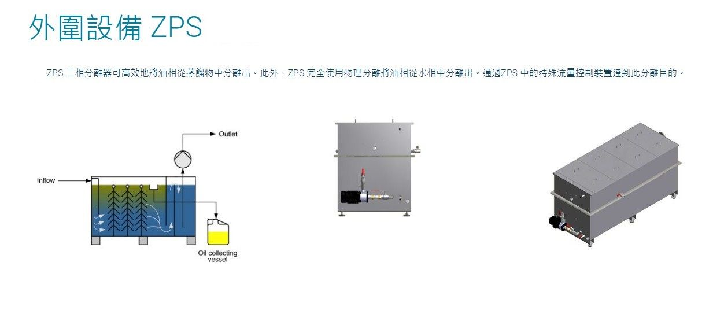
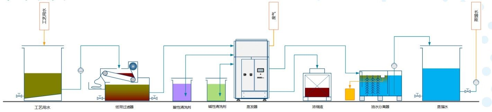
系統規格
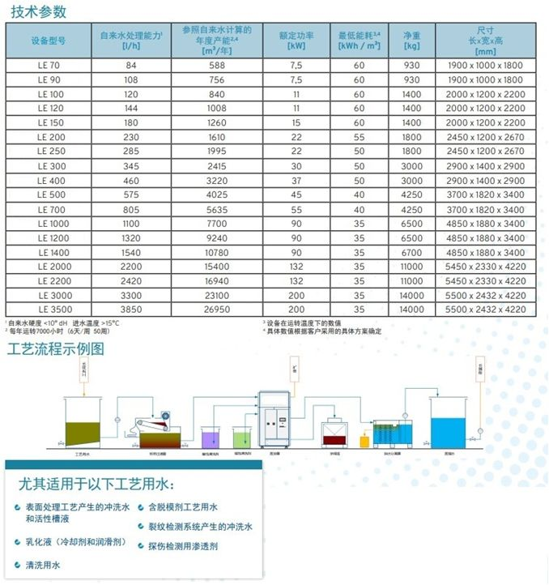
Toyota豐田發動機產品
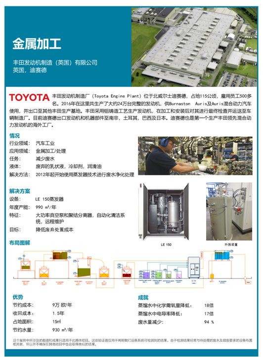
其他代理機型


Contact ／ 聯絡我們
想評估廢液減量？先告訴我們目前的廢液狀況
- 每月廢液量大約多少？
- 廢液種類：切削液、清洗廢水、電鍍廢液或其他？
提供目前的廢液種類、產生量與處理方式，圓華團隊會協助評估適合的設備與導入方式。
圓華油品股份有限公司
- Tel
- 04-2335-5559
- Fax
- 04-2335-8886
- Hours
- 週一至週五 08:00 – 17:00